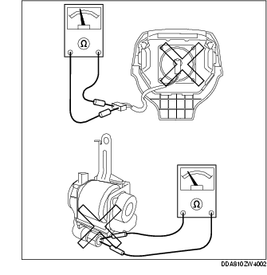
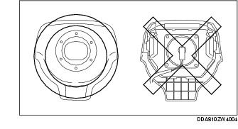

Service warnings
Air Bag Module and Pre-tensioner Seat Belt Inspection
• Inspecting an air bag module and pre-tensioner seat belts using a tester can operate (deploy) the air bag module and pre-tensioner seat belts, which may cause serious injury. Do not use a tester to inspect an air bag module and pre-tensioner seat belts. Always use the on-board diagnostic function to diagnose the air bag module for malfunctions.

Air Bag Module Handling
• Handling a live (undeployed) air bag module that is pointed toward your body could result in serious injury if the air bag module were to accidentally operate (deploy). When carrying a live (undeployed) air bag module, point the deployment surface away from your body to lessen the chance of injury in case it operates (deploys).

• A live (undeployed) air bag module placed with its deployment surface to ground is dangerous. If the air bag module were to accidentally operate (deploy), it could cause serious injury. Always place a live (undeployed) air bag module with its deployment surface up.

Side Air Bag Module Handling
• When a side air bag module operates (deploys) due to a collision, the interior of the seat back (pad, frame, trim) may become damaged. If a side air bag does not operate (deploy) normally from a seat back that has been reused, a serious accident may result. After a side air bag has operated (deployed), always replace both the side air bag module and the seat back (pad, frame, trim) with new parts. After servicing, verify that the seat operates normally and that the wiring harness is not caught.
SAS Control module Handling
• Removing the SAS control module or disconnecting the SAS control module connector with the ignition switch at the ON position can activate the sensor in the SAS control module and operate (deploy) the air bags and pre-tensioner seat belts, which may cause serious injury. Before removing the SAS control module or disconnecting the SAS control module connector, always turn the ignition switch to the LOCK position, disconnect the negative battery cable, and then wait for 1 min or more to allow the backup power supply of the SAS control module to deplete its stored power.
• Connecting the SAS control module connector with the SAS control module not securely fixed to the vehicle is dangerous. The sensor in the SAS control module could send an electrical signal to the air bag modules and pre-tensioner seat belts. This will operate (deploy) the air bags and pre-tensioner seat belts, which may result in serious injury. Therefore, before connecting the connector, securely fix the SAS control module to the vehicle.
• Because a sensor is built into the SAS control module, once the air bags and pre-tensioner seat belts have operated (deployed) due to a collision or other causes, the SAS control module must be replaced with a new one even if the used one does not have any visible external damage or deformation. The used SAS control module may have been damaged internally, which may cause improper operation. If the SAS control module is reused, the air bags and pre-tensioner seat belts may not operate (deploy) normally, which could result in a serious accident. Always replace the SAS control module with a new one. The SAS control module cannot be bench-checked or self-checked.
Side Air Bag Sensor Handling
• Removing the side air bag sensor or disconnecting the side air bag sensor connector with the ignition switch at the ON position can activate the side air bag sensor and operate (deploy) the side air bag, which may cause serious injury. Before removing the side air bag sensor or disconnecting the side air bag sensor connector, always turn the ignition switch to the LOCK position, disconnect the negative battery cable, and then wait for 1 min or more to allow the backup power supply of the SAS control module to deplete its stored power.
• If the side air bag sensor is subjected to shock or the sensor is disassembled, the side air bag may accidentally operate (deploy) and cause injury, or the system may fail to operate normally and cause a serious accident. Do not subject the side air bag sensor to shock or disassemble the sensor.
• Because a sensor is built into the side air bag sensor, once the air bag has operated (deployed) due to a collision or other causes, the side air bag sensor must be replaced with a new one even if the used one does not have any visible external damage or deformation. If the side air bag sensor is reused, the side air bag may not operate (deploy) normally, which could result in a serious accident. Always replace the side air bag sensor with a new one. The side air bag sensor cannot be bench-checked or self-checked.
Pre-tensioner Seat Belt Inspection
• Inspecting a pre-tensioner seat belt using a tester can operate (deploy) the pre-tensioner seat belt, which may cause serious injury. Do not use a tester to inspect a pre-tensioner seat belt. Always use the on-board diagnostic function to diagnose the pre-tensioner seat belt for malfunctions.